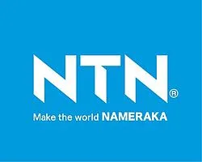
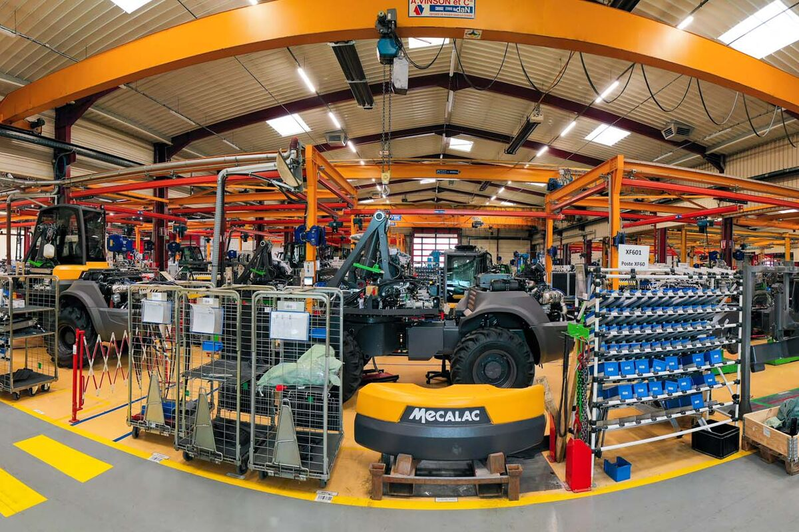
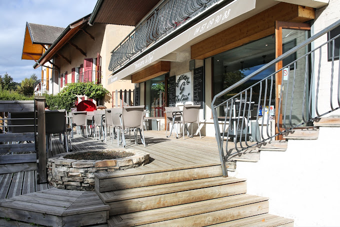
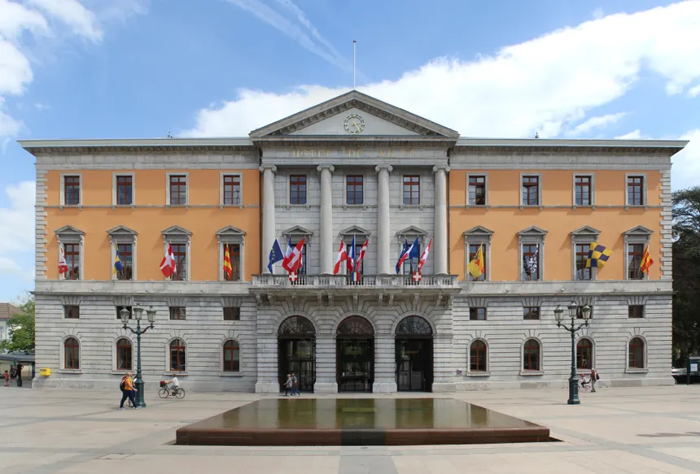

Depuis septembre 2024 : alternant administrateur système Linux chez NTN Europe.
Missions : gestion des serveurs, supervision, conteneurisation, documentation technique.
Compétences développées : administration Linux, scripting, rigueur, autonomie.
Été 2024 : travail en tant que manutentionnaire chez Mecalac.
Qualités développées : endurance, précision, respect des consignes de sécurité.
Mai 2024 : participation en tant que jury aux Cordées de la réussite.
Qualités développées : écoute, évaluation objective, engagement citoyen.
Été 2023, Été 2021 : aide-cuisine et plongeur au restaurant "Le Céjo" à Metz-Tessy (74).
Novembre 2019 : stage de 3e au même restaurant en tant qu'aide-cuisinier.
Qualités développées : curiosité, esprit d’équipe, autonomie, organisation.
2020–2023 : arbitre au niveau régional.
Qualités développées : leadership, prise de décision, gestion du stress.
Août 2021 : participation à la rénovation d’une maison pour la mairie d’Annecy.
Qualités développées : rigueur, travail en équipe.
